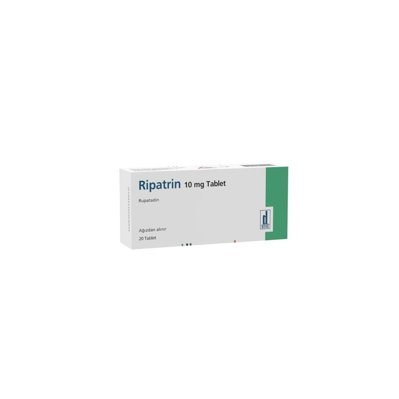

Ripatrin 10 mg Tablet, 20 Adet

Ne için kullanılır
KT · Bölüm 1RİPATRİN somon renkli, yuvarlak bikonveks tabletler olup, 20 tane tablet halinde sunulan anti- allerjik bir ilaçtır. RİPATRİN bir antihistamindir. R İPATRİN etkin madde olarak rupatadin fumarat içerir.
RİPATRİN 12 yaş ve üzeri hastalarda hapşırma, burun akıntısı, göz ve burun kaşıntısı gibi alerjik rinit belirtilerini giderir. RİPATRİN ayrıca ürtiker (alerjik bir deri döküntüsü) ile ilişkili kaşıntı ve kurdeşen (lokalize deri kızarıklığı ve şişmesi) gibi semptomları hafifletmek için de kullanılır.